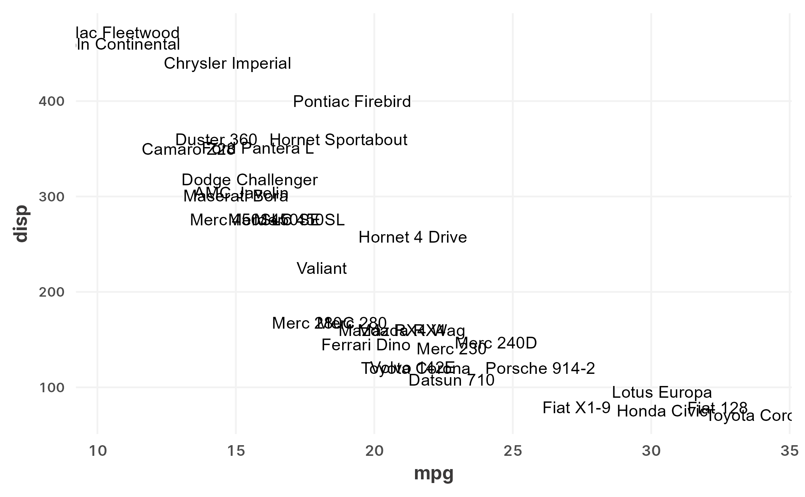
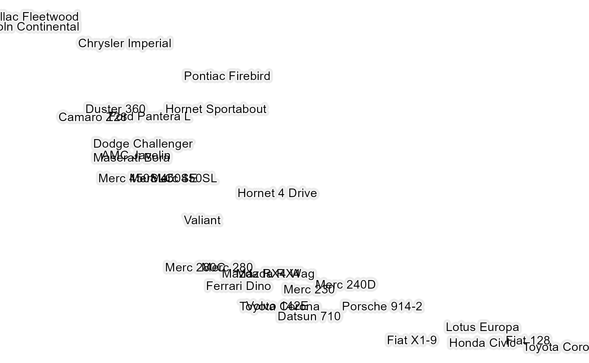

Mimicking SVG-style "stroke" styles, this function uses 1-2 ggfx::with_outer_glow filters
to create outlines around text. There are two layers for the following uses: the first layer is designed to
create a visible outline that places emphasis on the text. The second layer is designed to add
a mask around the outlined text that makes it stand out from the background.
geom_text_outline( ..., geom = "geom_text", inner_params = list(), outer_params = list(), use_outer = TRUE )
Arguments
| ... | Passed to the geom layer as specified in the |
|---|---|
| geom | Which geom layer to apply outlines over. Defaults to |
| inner_params | Passed to the first |
| outer_params | Passed to the second |
| use_outer | Whether the outer outline should be turned on. Defaults to |
Value
A ggplot2 layer if use_outer is TRUE, otherwise a list of two layers.
Details
This is particularly useful for labels drawn over panels with grid lines and a non-white background color. Outlines will create a stronger perceptual contrast for the labels.
Examples
# \dontrun{ library(ggplot2) p <- ggplot(mtcars, aes(mpg, disp, label = rownames(mtcars))) p + geom_text_outline()p + geom_text_outline(check_overlap = TRUE, angle = 30)p + geom_text_outline(color = "white", inner_params = list(colour = "black"), use_outer = FALSE) + theme_void()# }